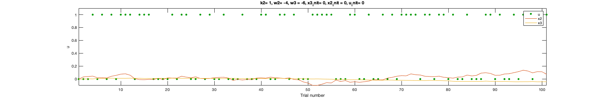
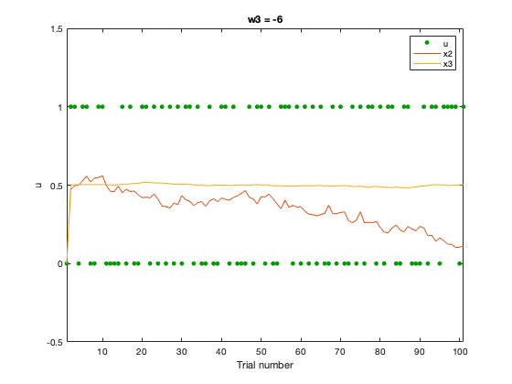
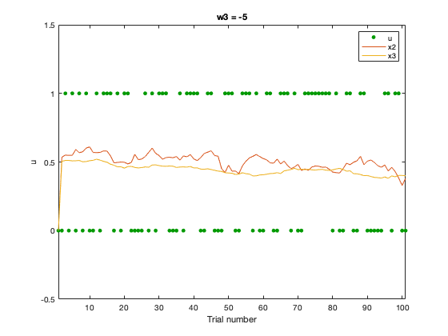
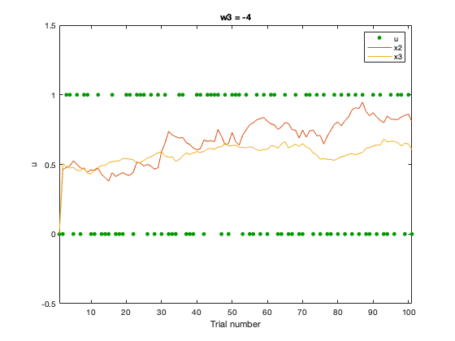
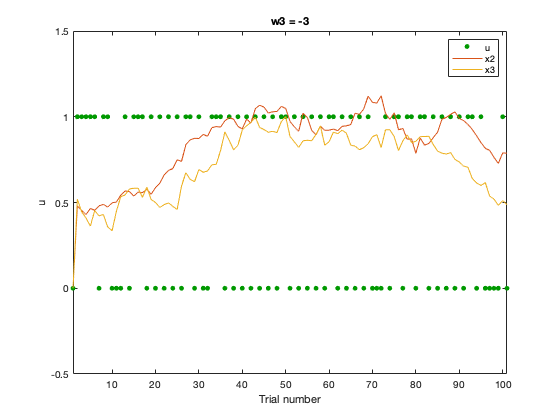
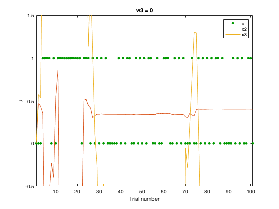
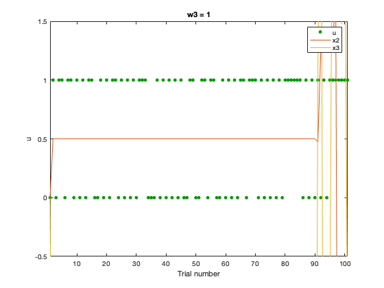
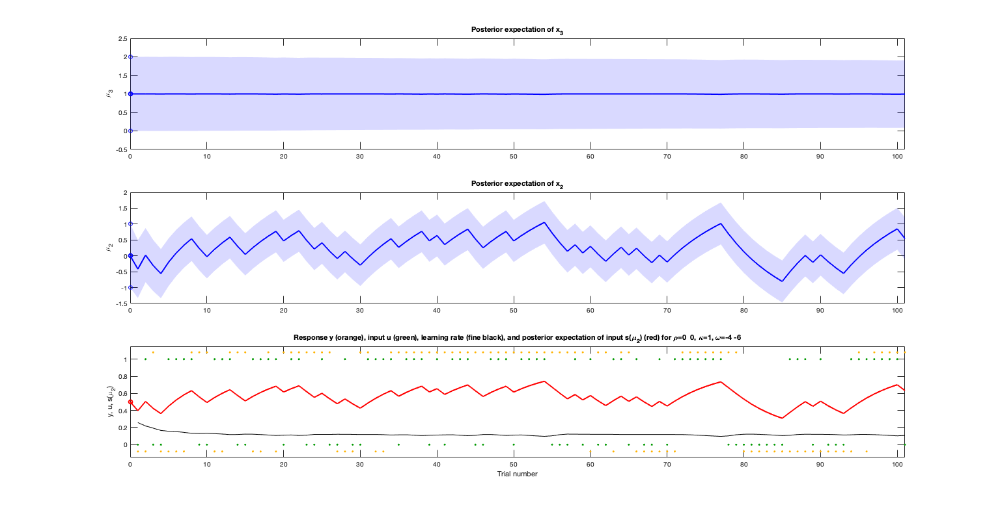

Contents
a) Generating the inputs
k2 = 1; w2 = -4; w3 = -6; x3_init = 0; x2_init = 0; u_init = 0; inputs = generate_inputs(k2,w2,w3,x3_init,x2_init,u_init); u = inputs(:,1); x2 = inputs(:,2); x3 = inputs(:,3); scrsz = get(0,'ScreenSize'); outerpos = [0.2*scrsz(3),0.7*scrsz(4),0.8*scrsz(3),0.3*scrsz(4)]; figure('OuterPosition', outerpos) plot(u, '.', 'Color', [0 0.6 0], 'MarkerSize', 11) xlabel('Trial number') ylabel('u') axis([1, length(inputs), -0.1, 1.1]) hold on; plot(x2); plot(x3); legend('u','x2','x3') str = sprintf('k2= %0.5g, w2= %0.5g, w3 = %0.5g, x3_init= %0.5g, x2_init = %0.5g, u_init= %0.5g', k2,w2,w3,x3_init,x2_init,u_init); title(str) hold off;
Trying out different thetas
Higher volatility coefficients make the generated x2 and x3 much more variant. If it is too low, x2 (the tendency towards 1) becomes constant
close all; k2 = 1; w2 = -4; w3_list = [-6, -5, -4, -3, 0, 1]; x3_init = 0.5; x2_init = 0.5; u_init = 0; it = 1; for w3 = w3_list inputs = generate_inputs(k2,w2,w3,x3_init,x2_init,u_init); u = inputs(:,1); x2 = inputs(:,2); x3 = inputs(:,3); figure(it) plot(u, '.', 'Color', [0 0.6 0], 'MarkerSize', 11) xlabel('Trial number') ylabel('u') axis([1, length(inputs), -0.5, 1.5]) hold on; plot(x2); plot(x3); legend('u','x2','x3') str = sprintf('w3 = %d', w3); title(str) hold off; it = it + 1; end     
Simulating beliefs and responses
The estimate for w2 is far of while it is exact for w3
addpath('../tapas/HGF') k2 = 1; w2 = -4; w3 = -6; x3_init = 0; x2_init = 0; u_init = 0; inputs = generate_inputs(k2,w2,w3,x3_init,x2_init,u_init); u = inputs(:,1); x2 = inputs(:,2); x3 = inputs(:,3); bopars = tapas_fitModel([],... u,... 'tapas_hgf_binary_config',... 'tapas_bayes_optimal_binary_config',... 'tapas_quasinewton_optim_config'); sim = tapas_simModel(u,... 'tapas_hgf_binary',... [NaN 0 1 NaN 1 1 NaN 0 0 1 1 NaN w2 w3],... 'tapas_unitsq_sgm',... 5,... 12345); tapas_hgf_binary_plotTraj(sim)
Ignored trials: none
Irregular trials: none
Optimizing...
Calculating the log-model evidence (LME)...
Results:
Parameter estimates for the perceptual model:
mu_0: [NaN 0 -1.1146]
sa_0: [NaN 0.1000 1]
rho: [NaN 0 0]
ka: [1 1]
om: [NaN -6.1146 -5.9999]
Model quality:
LME (more is better): -71.0158
AIC (less is better): 145.9667
BIC (less is better): 153.812
AIC and BIC are approximations to -2*LME = 142.0315.
Ignored trials: none
